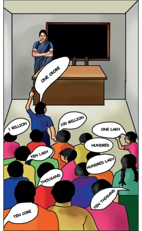

Chapter
ALGEBRA
3
Learning Objectives
- To express numbers in the exponential form.
- To understand the laws of exponents.
- To find the unit digit of numbers represented in exponential form.
- To know about the degree of expressions.
Teacher asked students to tell the largest number known to them. They called out numbers like, 'Thousand', 'Lakh', 'Million', 'Crore' and so on. Finally, Kumaran was declared as winner with his number 'Thousand lakh crore'.

All the students clapped. The teacher also honoured Kumaran and he was extremely happy.
But, everything came to an end as the teacher asked him to write his number on the blackboard. With great difficulty of counting the zeros several times, he wrote as 1000000000000000. Is it correct?
Now, the teacher wrote another five zeros on the right of the number and threw the open challenge to read the number. Of Fig. 3.1 course, there was an absolute silence in the classroom.
Dealing with big numbers is not so easy. Isn't it? But, we do use very big numbers in reality? Here are few examples where we use large numbers in real life situations.
- The distance between the Earth and the Sun is 149600000000 m.
- Mass of the Earth is 5970000000000000000000000 kg.
- The speed of light is 299792000 m/sec.
- Average radius of the Sun is 695000 km.
- The distance between Moon and the Earth is 384467000 m. There exists a simple and nice way to represent such numbers. To know that we need to learn about exponents.